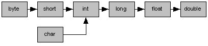

5.6.1 Standardkonvertierungen
Es gibt diverse Konvertierungen zwischen unterschiedlichen Datentypen
in Java. Diese werden einerseits vom Compiler automatisch vorgenommen,
beispielsweise bei der Auswertung von numerischen Ausdrücken.
Andererseits können sie verwendet werden, um mit Hilfe des Type-Cast-Operators
(siehe Kapitel 6) eigene
Konvertierungen vorzunehmen.
Java unterscheidet prinzipiell zwischen erweiternden
und einschränkenden Konvertierungen
und diese noch einmal nach primitiven Typen und Referenztypen. Zunächst
zu den Referenztypen:
- Als erweiternde Konvertierung eines Referenztyps T
wird vor allem die Umwandlung eines Objekts vom Typ T
in eine seiner Vaterklassen angesehen.
- Als einschränkende Konvertierung eines Referenztyps T
wird vor allem die Umwandlung eines Objekts vom Typ T
in eine der aus T abgeleiteten
Klassen angesehen.
Daneben gibt es noch eine ganze Reihe weiterer Regeln zur Definition
von erweiternden und einschränkenden Konvertierungen von Referenztypen.
Die Bedeutung von Vaterklassen und den daraus abgeleiteten Unterklassen
wird in Kapitel 9 ausführlich
erläutert.
Konvertierungen auf primitiven Datentypen
sind etwas aufwändiger zu erklären. Wir benutzen dazu Abbildung 5.1:

Abbildung 5.1: Konvertierungen auf primitiven Datentypen
Jede Konvertierung, die in Pfeilrichtung erfolgt, beschreibt eine
erweiternde Konvertierung, und jede Konvertierung, die entgegen der
Pfeilrichtung erfolgt, beschreibt eine einschränkende Konvertierung.
Andere Konvertierungen zwischen primitiven Datentypen sind nicht erlaubt.
Insbesondere gibt es also keine legale Konvertierung von und nach
boolean
und auch keine Konvertierung zwischen primitiven Typen und Referenztypen.
Welche Bedeutung haben nun aber die verschiedenen Konvertierungen
zwischen unterschiedlichen Typen? Wir wollen uns an dieser Stelle
lediglich mit den Konvertierungen zwischen primitiven Typen beschäftigen.
Wie aus Abbildung 5.1
ersichtlich ist, beschränken sich diese auf Umwandlungen zwischen
numerischen Typen. Die Anwendung einer erweiternden Konvertierung
wird in folgenden Fällen vom Compiler automatisch vorgenommen:
- Bei einer Zuweisung, wenn der Typ der Variablen und des zugewiesenen
Ausdrucks nicht identisch ist
- Bei der Auswertung eines arithmetischen Ausdrucks, wenn Operanden
unterschiedlich typisiert sind
- Beim Aufruf einer Methode, falls die Typen der aktuellen Parameter
nicht mit denen der formalen Parameter übereinstimmen
Es ist daher beispielsweise ohne Weiteres möglich, ein short
und ein int
gemeinsam in einem Additionsausdruck zu verwenden, da ein short
mit Hilfe einer erweiternden Konvertierung in ein int
verwandelt werden kann. Ebenso ist es möglich, ein char
als Array-Index zu verwenden, da es erweiternd in ein int
konvertiert werden kann. Auch die Arithmetik in Ausdrücken, die
sowohl integrale als auch Fließkommawerte enthalten, ist möglich,
da der Compiler alle integralen Parameter erweiternd in Fließkommawerte
umwandeln kann.
Es ist dagegen nicht ohne Weiteres möglich, einer int-Variablen
einen double-Wert
zuzuweisen. Die hierzu erforderliche einschränkende Konvertierung
nimmt der Compiler nicht selbst vor; sie kann allerdings mit Hilfe
des Type-Cast-Operators manuell durchgeführt werden. Auch die
Verwendung eines long
als Array-Index verbietet sich aus diesem Grund.
5.6.2 Vorzeichenlose Bytes
In Java sind alle numerischen Datentypen vorzeichenbehaftet. Das ist
in vielen Fällen sinnvoll, kann aber bei der Handhabung von 8-Bit-Bytes
hinderlich sein. Wird ein Byte als Repräsentation eines 8-Bit
langen Maschinenworts angesehen, will man meist den Wertebereich von
0 bis 255 zur Verfügung haben. Als vorzeichenbehafteter Datentyp
kann byte
aber nur Werte von -128 bis 127 darstellen. Ein Wert größer
oder gleich 128 erfordert also mindestens ein short
oder ein int.
Deren Länge beträgt aber 2 bzw. 4 Byte.
Das Dilemma lässt sich dadurch auflösen, dass man zwischen
der programminternen Verarbeitung eines Bytes und seiner äußeren
Repräsentation unterscheidet. Die Repräsentation nach außen
erfolgt dabei mit dem Datentyp byte.
Zur Verarbeitung im Programm wird er dagegen in ein int
konvertiert, so dass alle Werte von 0 bis 255 dargestellt werden können.
Konvertierungsmethoden erlauben es, zwischen beiden Darstellungen
zu wechseln.
Natürlich gibt es keinerlei automatischen Schutz gegen Wertebereichsüberschreitungen,
wenn ein Byte als int
verarbeitet wird. Dafür ist ausschließlich die Anwendung
selbst verantwortlich.
Das folgende Listing zeigt eine einfache Klasse ByteKit,
mit der zwischen beiden Darstellungen gewechselt werden kann (Klassen
werden in Kapitel 8 erläutert):
001 /**
002 * ByteKit
003 *
004 * Einfache Klasse zur Umwandlung zwischen int, char und
005 * vorzeichenlosen Bytes.
006 */
007 public class ByteKit
008 {
009 /**
010 * Wandelt value (0 <= value <= 255) in ein byte um.
011 */
012 public static byte fromUnsignedInt(int value)
013 {
014 return (byte)value;
015 }
016
017 /**
018 * Wandelt c in ein byte um. Das High-Byte wird ignoriert.
019 */
020 public static byte fromChar(char c)
021 {
022 return (byte)(c & 0xFF);
023 }
024
025 /**
026 * Betrachtet value als vorzeichenloses byte und wandelt
027 * es in eine Ganzzahl im Bereich 0..255 um.
028 */
029 public static int toUnsignedInt(byte value)
030 {
031 return (value & 0x7F) + (value < 0 ? 128 : 0);
032 }
033
034 /**
035 * Betrachtet value als vorzeichenloses byte und wandelt
036 * es in ein Unicode-Zeichen mit High-Byte 0 um.
037 */
038 public static char toChar(byte value)
039 {
040 return (char)toUnsignedInt(value);
041 }
042
043 /**
044 * Liefert die Binaerdarstellung von value.
045 */
046 public static String toBitString(byte value)
047 {
048 char[] chars = new char[8];
049 int mask = 1;
050 for (int i = 0; i < 8; ++i) {
051 chars[7 - i] = (value & mask) != 0 ? '1' : '0';
052 mask <<= 1;
053 }
054 return new String(chars);
055 }
056 }
|
ByteKit.java |
Listing 5.12: Umwandlung zwischen int, byte und char
Eine einfache Anwendung der Klasse ByteKit
zeigt das folgende Programm:
001 /* Listing0513 */
002
003 public class Listing0513
004 {
005 public static void main(String[] args)
006 {
007 for (int i = 0; i < 256; ++i) {
008 System.out.print("i=" + i);
009 byte b = ByteKit.fromUnsignedInt(i);
010 System.out.print(" b=" + ByteKit.toBitString(b));
011 char c = ByteKit.toChar(b);
012 System.out.print(" c=" + (c >= 32 ? c : '.'));
013 System.out.println();
014 }
015 }
016 }
|
Listing0513.java |
Listing 5.13: Anwendung der Klasse ByteKit